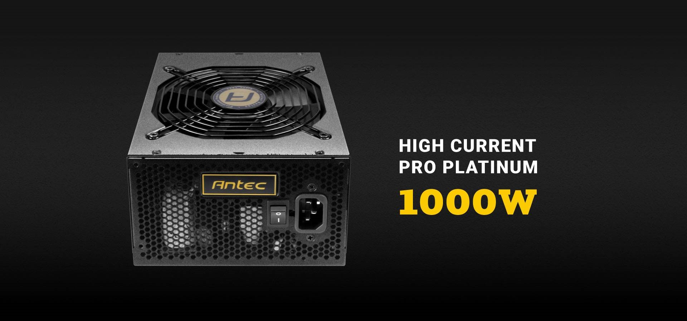

850W continuous power supply - 850W of continuous Power with 94% Maximum energy efficiency, 80 Plus Platinum Certified.
Dbb fan - the 135mm double Ball Bearing DBB fan s hours of operation at the optimal temperature. A thermal Manager is ideal for quiet computing.
Oc Link - the new oc-link feature allows 2 hcp Platinum power supplies to work in tandem to power the most demanding systems.
High Current rails - The quad fully protected +12V high current rails with high load capabilities ensure maximum CPU and GPU compatibility.
Technical Features - Full modular for less clutter; Circuit Shield for industry-level protections; AQ7 7 years support; 16-pin sockets; 6 PCI-E connectors; ATX12V 2. 4 and EPS12V 2. 92 compatible.
Read More
Return